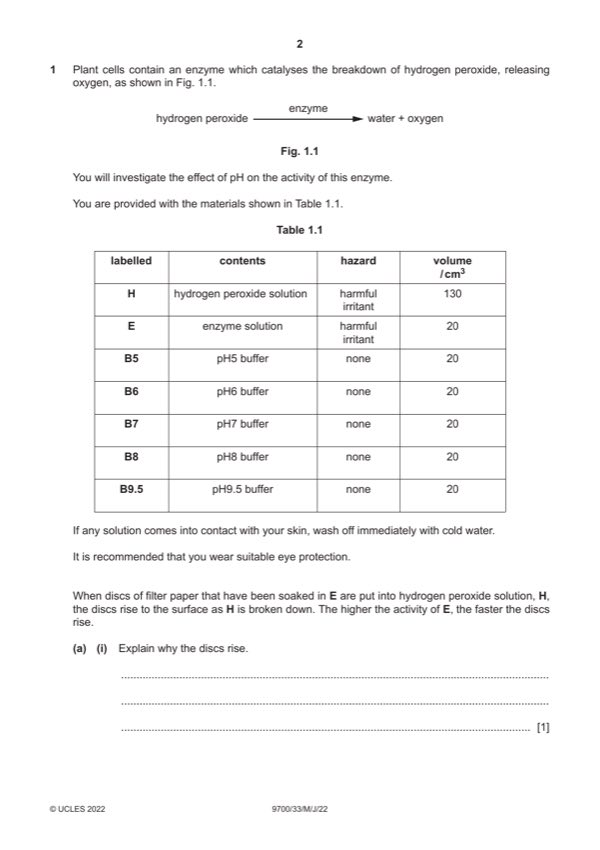

Question 1

Original paper page 2
Part 1(a)(i) — solution
oxygen is released (causing the discs to rise) ; 1
Mark points
- Include the ideas shown in the solution above.
Part 1(a)(ii) — solution
1 heading for independent variable: pH and before heading for dependent variable ; 5
Mark points
- Include the ideas shown in the solution above.
Part 1(a)(iii) — solution
states / ticks, whether supports or does not support hypothesis and correct explanation of trend according to candidate’s 1
results ;
Mark points
- Include the ideas shown in the solution above.
Part 1(a)(iv) — solution
pH ; 1
Mark points
- Include the ideas shown in the solution above.
Part 1(a)(v) — solution
use boiled enzyme ; 1
Mark points
- Include the ideas shown in the solution above.
Part 1(a)(vi) — solution
states a suitable reason ; e.g. contaminated with enzyme 2
states how to reduce this source of error ; e.g. use fresh hydrogen peroxide for each test
Mark points
- Include the ideas shown in the solution above.
Part 1(a)(vii) — solution
use pH values either side of the optimum pH according to the results / AW ; 1
Mark points
- Include the ideas shown in the solution above.
Part 1(b)(i) — solution
room temperature stated and °C ; 1
Mark points
- Include the ideas shown in the solution above.
Part 1(b)(ii) — solution
states two temperatures between room temperature and 50 °C and at least 5 °C apart ; 1
Mark points
- Include the ideas shown in the solution above.
Part 1(b)(iii) — solution
states the pH that gave the shortest time according to the candidate’s results ; 1
Mark points
- Include the ideas shown in the solution above.
Part 1(b)(iv) — solution
records a time for T1 and a time for T2 ; 1
Mark points
- Include the ideas shown in the solution above.
Part 1(b)(v) — solution
any three from: 3
Mark points
- Include the ideas shown in the solution above.
Part 1 — solution
correct reference to increase in kinetic energy ;
Mark points
- Include the ideas shown in the solution above.